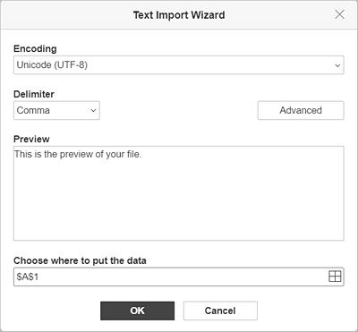
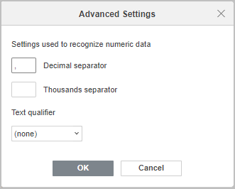

Dobijanje podataka iz TXT/CSV datoteke
Ako vam je potrebno da brzo preuzmete podatke iz .txt/.csv datoteke i pravilno ih rasporedite u tabeli, koristite opciju Dobijanje podataka iz TXT/CSV datoteke dostupnu na kartici Podaci.
Korak 1. Uvoz datoteke
- Kliknite na opciju Dobijanje podataka na kartici Podaci.
- Izaberite jednu od opcija za uvoz:
- Iz lokalne TXT/CSV datoteke: pronađite potrebnu datoteku na hard disku, izaberite je i kliknite na Otvori.
- Sa TXT/CSV veb adrese: nalepite link do datoteke ili veb stranice u polje Nalepi URL podataka i kliknite na OK.
Link za pregled ili uređivanje datoteke koja se nalazi na ONLYOFFICE portalu ili u skladištu treće strane ne može se koristiti u ovom slučaju. Molimo vas da koristite link za preuzimanje datoteke.
- Iz lokalne XML datoteke: pronađite potrebnu datoteku na hard disku, izaberite je i kliknite na Otvori.
Trenutno je podržan samo XML Spreadsheet 2003 format.
Korak 2. Podešavanje postavki
Čarobnjak za uvoz teksta obuhvata četiri odeljka: Kodiranje, Razdvajač, Pregled i Izaberite gde da smestite podatke.

- Kodiranje. Parametar je podrazumevano postavljen na UTF-8. Ostavite ovu vrednost ili izaberite odgovarajući tip iz padajućeg menija.
-
Razdvajač. Ovaj parametar određuje tip razdvajača koji se koristi za raspodelu običnog teksta u različite ćelije. Dostupni razdvajači su Zarez, Tačka-zarez, Dvotačka, Tabulator, Razmak i Drugo (ručni unos).
Kliknite na dugme Napredno koje se nalazi sa desne strane da biste podesili postavke za podatke koji se prepoznaju kao numerički:

- Podesite Decimalni razdvajač i Razdvajač hiljada. Podrazumevani razdvajači su „.“ za decimalni i „,“ za hiljade.
- Izaberite Kvalifikator teksta. Kvalifikator teksta je znak koji se koristi za prepoznavanje početka i kraja teksta prilikom uvoza podataka. Dostupne opcije su: (nema), dvostruki navodnici i jednostruki navodnik.
- Pregled. Ovaj odeljak prikazuje kako će tekst biti raspoređen u ćelijama tabele.
- Izaberite gde da smestite podatke. Unesite potreban opseg u polje ili ga izaberite pomoću dugmeta Izaberi podatke sa desne strane.
- Kliknite na OK da biste uvezli datoteku i zatvorili Čarobnjak za uvoz teksta.